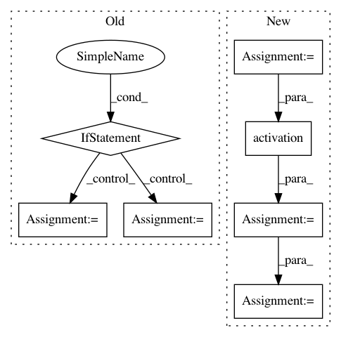

d0334962f6602fd835b0ed7219a972ebc36bb0fd,hypergan/discriminators/pyramid_discriminator.py,,discriminator,#Any#Any#Any#Any#Any#Any#Any#,47
Before Change
net += tf.random_normal(net.get_shape(), mean=0, stddev=config["noise"], dtype=gan.config.dtype)
if strided:
net = conv2d(net, config.first_strided_conv_size, name=prefix+"_expand", k_w=3, k_h=3, d_h=2, d_w=2,regularizer=None)
else:
net = conv2d(net, config.first_conv_size, name=prefix+"_expand", k_w=3, k_h=3, d_h=1, d_w=1,regularizer=None)
for i in range(depth):
//TODO better name for `batch_norm`?
if batch_norm is not None:
net = batch_norm(batch_size*2, name=prefix+"_expand_bn_"+str(i))(net)
After Change
stride = [1,filter_size_w,filter_size_h,1]
depth = int(int(net.get_shape()[3])*depth_increase)
if i ==0:
depth = config.first_conv_size
if strided:
net = conv2d(net, depth, name=prefix+"_expand_layer"+str(i), k_w=3, k_h=3, d_h=filter_size_h, d_w=filter_size_w, regularizer=None)
else:
net = conv2d(net, depth, name=prefix+"_expand_layer"+str(i), k_w=3, k_h=3, d_h=1, d_w=1, regularizer=None,gain=config.orthogonal_initializer_gain)
net = tf.nn.avg_pool(net, ksize=filter, strides=stride, padding="SAME")
print("[discriminator] layer", net)
for i in range(config.extra_layers):
output_features = int(int(net.get_shape()[3]))
net = activation(net)
net = conv2d(net, output_features//4, name=prefix+"_extra_layer"+str(i), k_w=3, k_h=3, d_h=1, d_w=1, regularizer=None,gain=config.orthogonal_initializer_gain)
print("[extra discriminator] layer", net)
k=-1
net = tf.reshape(net, [batch_size*2, -1])
In pattern: SUPERPATTERN
Frequency: 3
Non-data size: 7
Instances
Project Name: HyperGAN/HyperGAN
Commit Name: d0334962f6602fd835b0ed7219a972ebc36bb0fd
Time: 2017-03-23
Author: mikkel@255bits.com
File Name: hypergan/discriminators/pyramid_discriminator.py
Class Name:
Method Name: discriminator
Project Name: dmlc/dgl
Commit Name: 650f6ee1e0b3c2888a2c6d7db9c3d159cae5a583
Time: 2019-08-27
Author: expye@outlook.com
File Name: examples/pytorch/gin/gin.py
Class Name: GINLayer
Method Name: forward
Project Name: HyperGAN/HyperGAN
Commit Name: 322f71f0f8c06a738c47cf825f8726ee5f1f496a
Time: 2016-11-11
Author: martyn@255bits.com
File Name: lib/discriminators/pyramid_nostride_discriminator.py
Class Name:
Method Name: discriminator